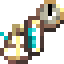

1.20.1 / (Addon) Firma: Civilization / Navigation

Navigation
Navigation
Navigating the world is not an easy task. In order to build a successful civilization, you must have a good grasp of your location, and a good record of important places!
No longer are there magic numbers that tell you exactly where you are. Instead, you must make technological advancements and acquire precise instruments to determine your position.
Longitude
To find your Longitude, that is, your distance from the Prime Meridian, you need a clock! Specifically, you need a precise timepiece that keeps itself synchronized with the solar time at the Prime Meridian.
Smith an Unfinished Navigator's Timepiece from a Brass Double Sheet before completing it with recipe on the right.


Once you craft your Navigator's Timepiece, you can hold it and press Right Click to determine your Longitude. Remember that your Longitude is measured in Degrees East or West, meaning 0 Degrees at the Prime Meridian, and 360 Degrees for an identical climate.
Latitude
To find your Latitude, that is, your distance from the Equator, you need to determine the degrees at which you view either Polaris, the North Star, or the Sun. Specifically, you need a precise mechanism for viewing astronomical features and measuring their angular distance from the horizon.
Smith an Unfinished Sextant from a Brass Double Ingot before completing it with recipe on the right.

Once you craft your Sextant, you can hold it and press Right Click to determine your Latitude. Remember that your Latitude is measured in Degrees North or South, meaning 0 Degrees at the Equator, and 90 Degrees North or South for a polar region.
Altitude
To find your Altitude, that is, your vertical distance from the Sea Level datum, you need to measure atmospheric pressure. Specifically, you need a device containing a compressible fluid, and you need to measure the volume of that fluid to determine the pressure.
Smith an Unfinished Barometer from a Brass Sheet before completing it with recipe on the right.
Once you craft your Barometer, you can hold it and press Right Click to determine your Altitude. Remember that your Altitude is measured in distance from the Sea Level datum.
Footnotes
Because you will be measuring distance in Degrees, it might be helpful to know the block conversions. Every 90 Degrees is 20,000 blocks, and every single degree is about 222 blocks.
In Firma: Civilization, Compasses will always point North, but are crafted with the original TerraFirmaCraft recipe.